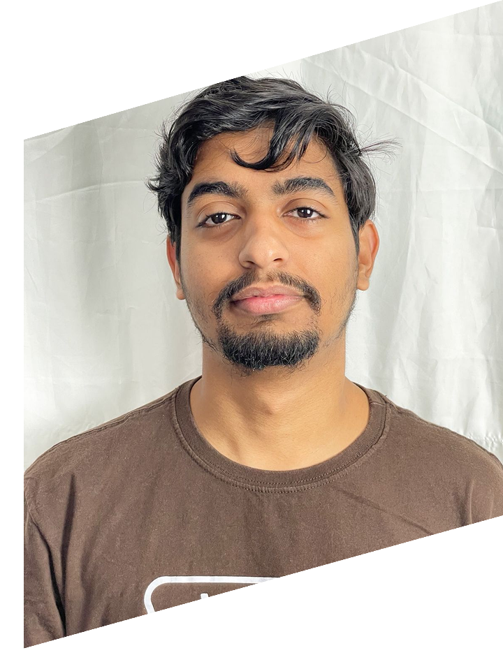

Desenvolvedor
Front End &
Mobile
Localizado em Queimados, Rio de Janeiro.

Localizado em Queimados, Rio de Janeiro.
Projetos reais publicados e em evolução constante, utilizando HTML, CSS e JavaScript. Apliquei tambem meu conhecimento em UX e UI Design em meus projetos.
Desenvolvi essa landing page com foco em uma interface limpa e objetiva, destacando os serviços da agência e incentivando a geração de leads. O site conta com um formulário em PHP para envio de dúvidas diretamente por e-mail à empresa, tornando o contato prático e eficiente.
Desenvolvi um cardápio digital interativo com sistema de carrinho em JavaScript, permitindo a seleção dinâmica de produtos e controle de quantidades. Ao finalizar, o pedido é enviado automaticamente para o WhatsApp da empresa, otimizando o processo de vendas e facilitando o atendimento direto com o cliente.
Desenvolvi esse site com foco em uma experiência simples e intuitiva, voltado para serviços de vistos. A página foi planejada para facilitar agendamentos e pagamentos online, oferecendo praticidade e segurança para os usuários durante todo o processo.
Tenho outros projetos em desenvolvimento e estudos práticos com foco em evolução constante.
ver mais no github →
Graduando em Ciência da Computação com foco em desenvolvimento Web e Mobile.
Busco evolução técnica constante por meio de cursos especializados em design de interfaces e desenvolvimento de aplicações.